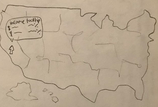
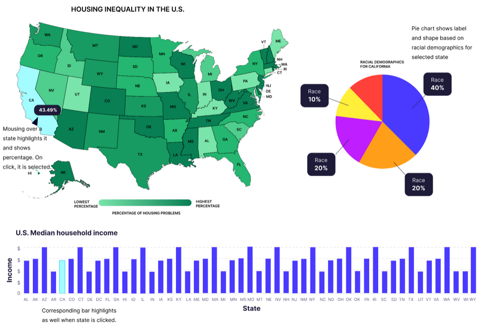

Samiyanur Islam, Jaimie Louie, Kelden Dorji & Ian Ho
Semester-long Course Project as part of COSI 116A: Information Visualization, taught by Prof. Dylan Cashman, Brandeis University.
Housing inequality is a significant issue in the United States, affecting access to safe, affordable, and quality housing for millions of people.
Visualizing Housing Inequality in the United States (2016-2020): Our project examines housing inequality in the United States using data from the U.S. Department of Housing and Urban Development, spanning the years 2016 to 2020.
Factors that contribute to the complexities of housing inequality:
Motivating Questions:
Embedded MP4 demo video using the HTML5 <video> tag. For example, this screen recording Prof. Cody Dunne made of Mike Bostock's flexible transitions in D3 slide:
Final visualization screenshots (PNG images), design justifications, UI walk-through, and linked presentation slides.
Our visualizations include a choropleth U.S. map and other interactive elements that allow users to explore housing inequality data across states. The map is color coded to represent the percentage of housing problems in each state, with housing problems defined as households with any of the following issues:
Summary of data, data types, and data preprocessing.
Expectation: Data sources match the problem statement and are appropriate. These descriptions should be very explicit so someone could read your page and properly reproduce your results.
This project uses datasets from the U.S. Department of Housing and Urban Development, including housing problems, demographic information, housing characteristics, and socioeconomic indicators by state from 2016 to 2020.
Our preprocessing steps involved data cleaning, transformation, and aggregation to facilitate meaningful analysis and visualization. First, we downloaded the datasets as Excel files from the HUD website and imported them into Google Sheets. We then cleaned the data by adding the appropriate column headers found in each dataset's metadata and removing empty columns and columns unrelated to our topic. Once we had our cleaned data, we explored it in Tableau to identify preliminary trends and patterns. We further reduced the data to include only the columns we needed for our visualizations, including percent housing problems (housing problem dataset), percent household income brackets (socioeconomic dataset), and percent racial demographics (race dataset) in separate sheets. Finally, we exported the data as CSV files, then converted them to JSON files for use in our visualizations.
After conducting interviews, we came up with our domain tasks, broken down into abstract tasks:
The primary consumers of our visualization would be the general public, policymakers, possibly teachers, and researchers. This is because we could use our visualization as a source of raising awareness about housing inequality through the public, and it could reach policymakers into realizing the severity and passing reforms to tackle the issue. Researchers and teachers could also possibly play a similar role in being able to influence a new generation of students and scholars to help this issue.
Sketches and design choices to justify final visualization.
Expectation: Evidence of iterative improvement. Logical discussion of design choices grounded in theory from course. Discusses feedback from usability testing.
Sketches:Each group member created three possible sketches for our visualization, then we voted on our favorite elements from each sketch, pictured below.
Using our sketches, we created a digital mockup of our visualization in Figma.
We prioritized seeing what factors affect housing inequality, specifically focusing on race and median income. We have charts showing race and median income alongside a US map portraying the percentage of housing problems for each state. The user can mouse over any state on the map to see the percentage of housing problems, and when selected the bar for that state in the bar chart will highlight that state’s median income. Also, the pie chart will change to display the racial demographics for the selected state. Vice versa, selecting a bar on the bar chart will select the state on the map. This helps the user compare percentages of housing problems across states, enhanced by the sequential color scale of the map. The user can explore the charts to compare race, income, and housing problems across states, and as a result, find trends in the data and focus on the states they are most interested in. This also ties into the task of seeing what locations are most affected by housing inequality, since the user can see the states most affected by housing problems.
Usability Testing:We conducted usability testing with peers to gather feedback on our visualization mockup. Participant feedback was generally positive, with users liking the spatial layout and finding the visualization easy to navigate and understand. Suggestions for improvement included using a color other than green for the map, as green is often associated with money or wealth, which is not what we are trying to convey. They suggested using a color scale that goes from white to the darkest color, as this would be easier to see. Also, users suggested sorting the bar chart in ascending/descending order rather than alphabetically to better assess trends, and possibly adding more pie and bar chart options to show more data.
Short summary of work completed and areas for improvement/future-work.
Expectation: Meaningfully wraps up project and has good future directions.
List here where any code, packages/libraries, text, images, designs, etc. that you leverage come from.